QDQ FUSES
僑電 QDQ 保險絲與保險絲座
依實物照片與資料夾名稱整理 CT-10、E16 系列防爆型陶瓷保險絲，以及 CT-FB101LA 保險絲座。
QDQ SERIES
現有商品照片
目前建立 16 個品項，其中包含 15 個保險絲 與 1 個保險絲座。封面一律優先使用保險絲或保險絲座本體照片。
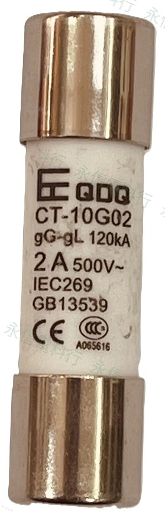
 僑電 QDQ
僑電 QDQCT-10 G02
防爆型陶瓷保險絲，資料夾標示 500V、2A、尺寸 10x38。
查看商品照片與資料 →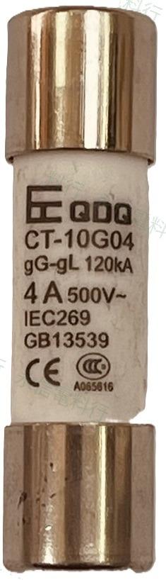
僑電 QDQCT-10 G04
防爆型陶瓷保險絲，資料夾標示 500V、4A。
查看商品照片與資料 →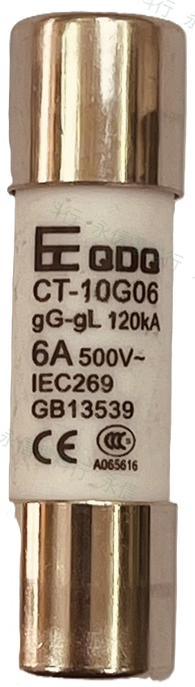
僑電 QDQCT-10 G06
防爆型陶瓷保險絲，資料夾標示 500V、6A、尺寸 10x38。
查看商品照片與資料 →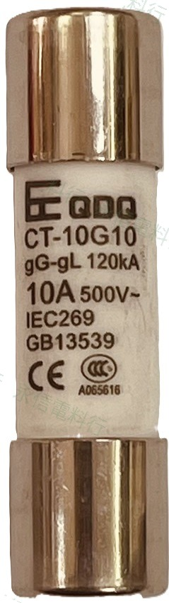
僑電 QDQCT-10 G10
防爆型陶瓷保險絲，資料夾標示 500V、10A。
查看商品照片與資料 →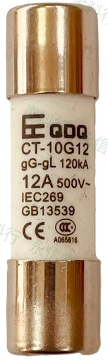
僑電 QDQCT-10 G12
防爆型陶瓷保險絲，資料夾標示 500V、12A。
查看商品照片與資料 →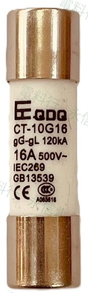
僑電 QDQCT-10 G16
防爆型陶瓷保險絲，資料夾標示 500V、16A。
查看商品照片與資料 →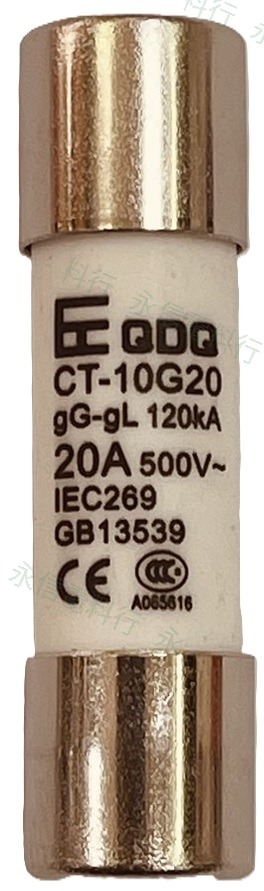
僑電 QDQCT-10 G20
防爆型陶瓷保險絲，資料夾標示 500V、20A。
查看商品照片與資料 →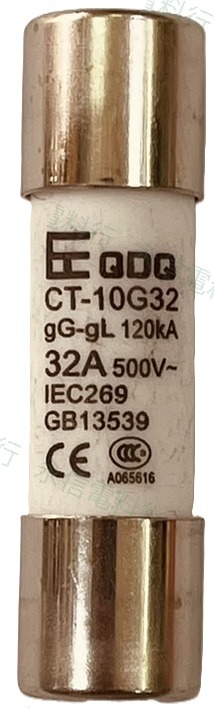
僑電 QDQCT-10 G32
防爆型陶瓷保險絲，資料夾標示 500V、32A。
查看商品照片與資料 →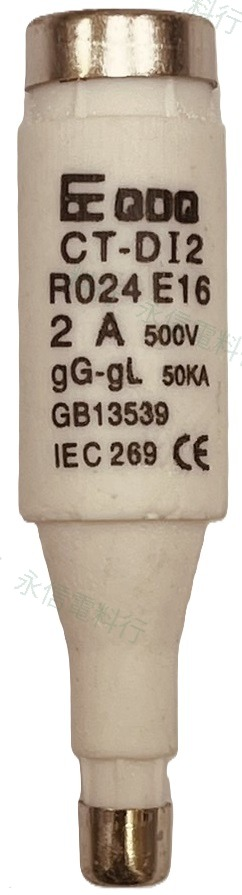
僑電 QDQE16 CT-DI2
防爆型陶瓷保險絲，資料夾標示 500V、2A。
查看商品照片與資料 →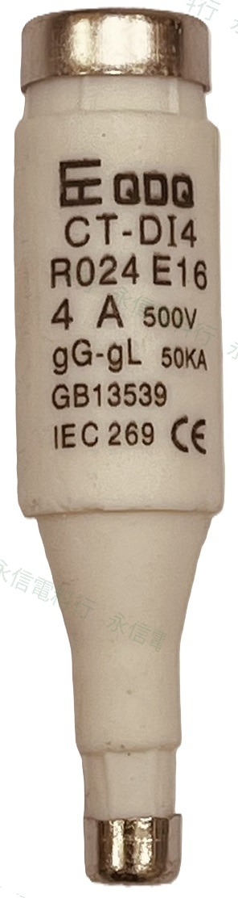
僑電 QDQE16 CT-DI4
防爆型陶瓷保險絲，資料夾標示 500V、4A。
查看商品照片與資料 → 僑電 QDQ
僑電 QDQE16 CT-DI6
防爆型陶瓷保險絲，資料夾標示 500V、6A。
查看商品照片與資料 →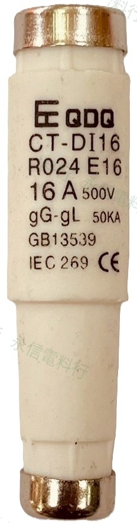
僑電 QDQE16 CT-DI16
防爆型陶瓷保險絲，資料夾標示 500V、16A。
查看商品照片與資料 →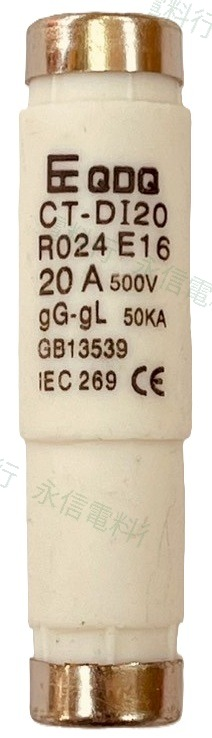
僑電 QDQE16 CT-DI20
防爆型陶瓷保險絲，資料夾標示 500V、20A。
查看商品照片與資料 →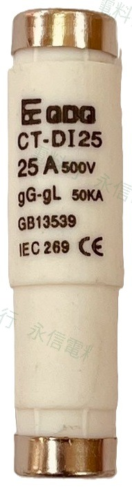
僑電 QDQE16 CT-DI25
防爆型陶瓷保險絲，資料夾標示 500V、25A。
查看商品照片與資料 →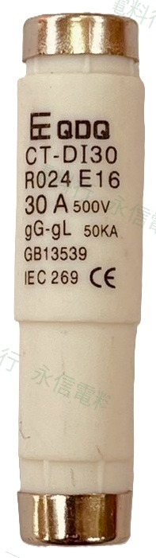
僑電 QDQE16 CT-DI30
防爆型陶瓷保險絲，資料夾標示 500V、30A。
查看商品照片與資料 →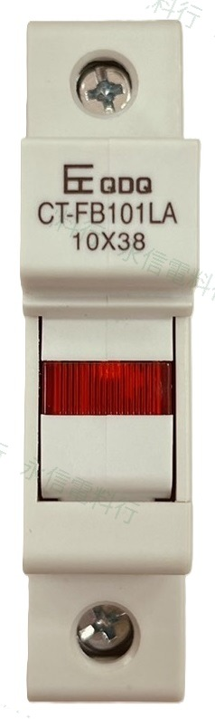
僑電 QDQCT-FB101LA
保險絲座，資料夾標示尺寸 10x38mm、690V、32A。
查看商品照片與資料 →